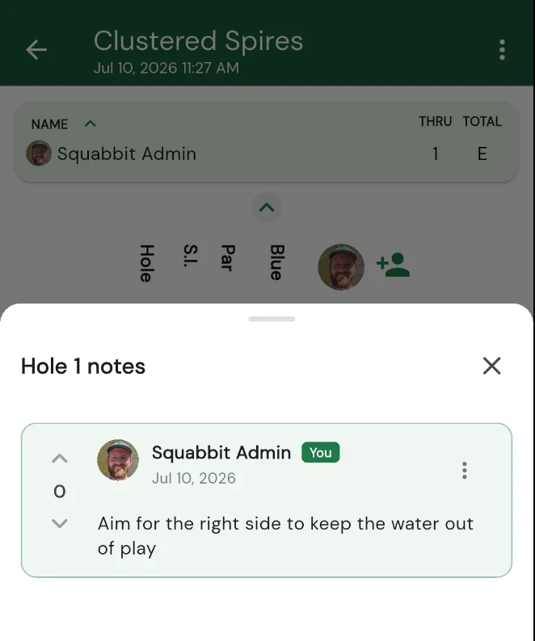

Hole notes: local knowledge on every scorecard
Jul 14, 2026
Every course has its secrets. The hidden bunker you cannot see from the tee, the green that runs harder than it looks, the safe miss that turns a card-wrecker into a routine par. That kind of knowledge usually lives in a member's head or gets passed along on the first tee. Hole notes give it a permanent home, right on the scorecard where you need it.

Leave a tip for a hole
Played a hole enough to have an opinion on it? Leave a note. Tell the next golfer to aim left of the fairway bunker off the tee, or that the green runs back-to-front so they should stay below the hole. Whatever you wish someone had told you the first time you played it, write it down for the person teeing off after you.
Shared with everyone who plays the course
Hole notes are public. Anyone who plays that course sees them, so the tips you leave become shared local knowledge that stays with the course for good. Play somewhere new and you arrive with the collected wisdom of everyone who has been there before you, instead of learning every trap the hard way.
The best tips rise to the top
Notes support voting, so the ones that actually help climb the list. When a tip saves you a stroke, give it an upvote. Over time each hole settles into the advice that golfers agree is worth knowing, with the sharpest reads sitting right at the top where you will see them first.
Right where you are looking
You do not have to go digging for any of this. On the scorecard, tap a hole number and choose "Hole notes" to read what others left or add your own. It is there in the moment you are standing on the tee thinking about how to play it, exactly when the advice matters most.
Start sharing what you know
Open a course you know well, tap a hole number, and leave a note on the shots you have figured out. The more golfers who chime in, the smarter every scorecard gets for the next person teeing it up.